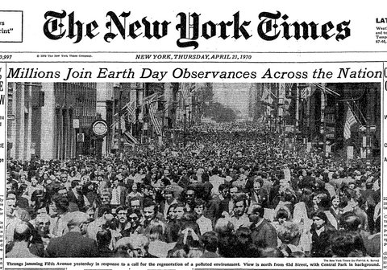

NEWS
On 22th of April millions people over the world celebrated Earth Day. According to Wiki, Earth Day is an annual event. Worldwide, various events are held to demonstrate support for environmental protection. Tap here for details.
The concept of Earth Day was established in 1969 at a UNESCO Conference in San Francisco. On March 21, 1970, a sanctioned Proclamation was signed by Secretary General U Thant at the United Nations. On April 22, 1970, U.S. Senator Gaylord Nelson founded Earth Day. National Earth Day is not considered a national holiday.
Image: First Earth Day - 22 of April 1970